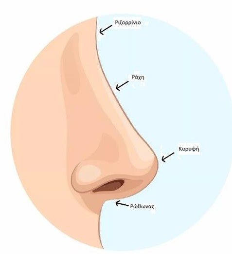
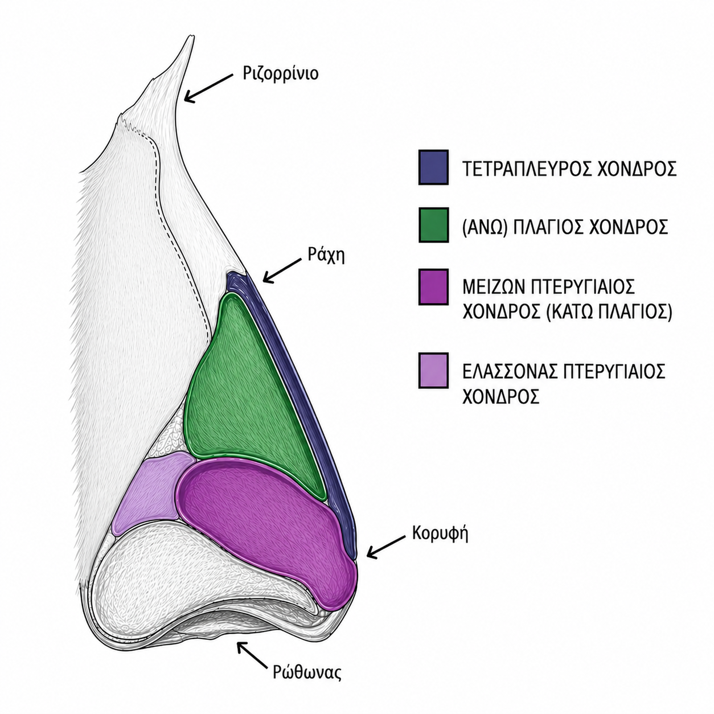
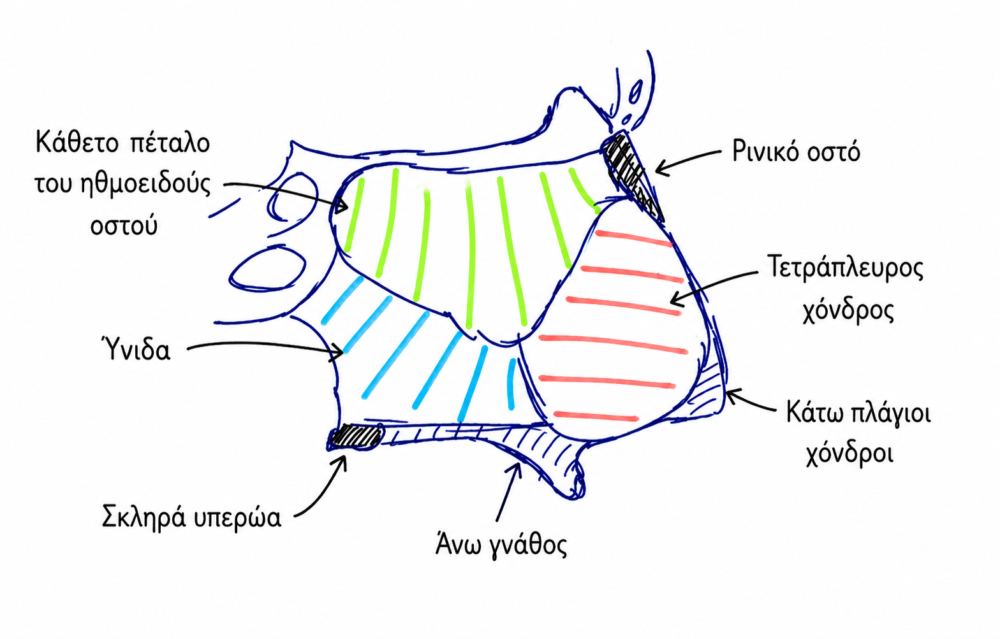
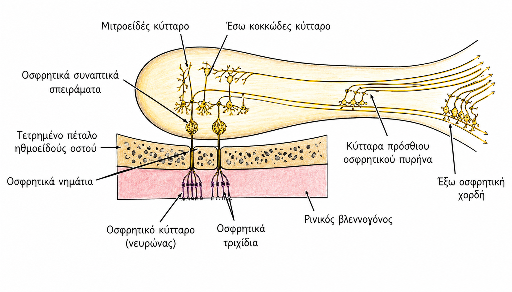
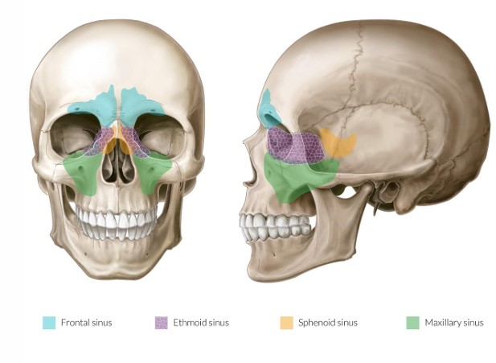

Μύτη – Έξω ρις, έσω ρις, φυσιολογία & παραρρίνιοι κόλποι
Οργανωμένες σημειώσεις για εξεταστική αποστήθιση και εκτύπωση σε A4 landscape
1. Έξω ρις – βασικά μορφολογικά στοιχεία
Η έξω ρις αποτελεί το εξωτερικό, εμφανές τμήμα της μύτης και στηρίζεται σε
οστεοχόνδρινο σκελετό, μύες και δερματικό περίβλημα.
Κύρια ανατομικά σημεία
- Ριζορρίνιο
- Ράχη
- Κορυφή = ακρωτήριο
- Κάτω βασική επιφάνεια
- Ρώθωνες / μυκτήρες = επιστημονική ονομασία για τα ρουθούνια
- Στυλίδα = κίων
- Πλάγιες επιφάνειες / πτερύγια
Δομικά στοιχεία έξω ρινός
- Οστεοχόνδρινος σκελετός
- Μύες
- Δερματικό περίβλημα

Έξω ρις – βασικά μορφολογικά σημεία
2. Οστεοχόνδρινος σκελετός έξω ρινός
Οστέινη μοίρα έξω ρινός
- Ρινική απόφυση μετωπιαίου οστού
- Μετωπιαία απόφυση άνω γνάθου
- Ρινικά οστά
- Πρόσθια μοίρα κάθετου πετάλου ηθμοειδούς
Χόνδρινη μοίρα έξω ρινός
Έχει μεγάλη σημασία στη στήριξη της μύτης.
- Χόνδρος ρινικού διαφράγματος
- Άνω πλάγιοι χόνδροι
- Πτερυγιαίοι χόνδροι → μείζονες + ελάσσονες
- Σησαμοειδείς χόνδροι μέσα στη μύτη
- Υνιορρινικοί χόνδροι
JTK: οι μείζονες πτερυγιαίοι χόνδροι ονομάζονται και κάτω πλάγιοι χόνδροι
και μοιάζουν σαν πέταλο αλόγου.
Για τις εξετάσεις: γενικά ασχολούμαστε περισσότερο με το
ρινικό διάφραγμα, τους άνω πλάγιους και τους κάτω πλάγιους χόνδρους.

Χόνδρινη μοίρα έξω ρινός
3. Ρινική βαλβίδα της έξω ρινός
SOS / πολύ σημαντική
Τι είναι η ρινική βαλβίδα;
- Βρίσκεται μεταξύ ρινικού διαφράγματος και άνω πλαγίου χόνδρου.
- Αποτελεί γωνιώδες άνοιγμα περίπου 10–15°.
- Είναι το πιο στενό και εύκαμπτο σημείο της μύτης.
- Ρυθμίζει τη ροή του εισπνεόμενου αέρα.
- Σε δυσλειτουργία της, ο ασθενής μπορεί να νιώθει ότι δεν αναπνέει καλά.
Ρινική βαλβίδα – στενό σημείο ροής αέρα
4. Μύες και δερματικό περίβλημα έξω ρινός
Μύες της έξω ρινός
- Ανελκτήρες: ανελκτήρας άνω χείλους
- Καθελκτήρες: καθελκτήρας διαφράγματος
- Πιεστήριοι: ρινικός μυς
- Διαστολείς:
- πρόσθιος διαστολέας ρινικών μυκτήρων
- οπίσθιος διαστολέας ρινικών μυκτήρων
Δερματικό περίβλημα
| Περιοχή | Χαρακτηριστικά |
|---|---|
| Οστέινο τμήμα – ράχη | λεπτό, ευκίνητο, χωρίς υποδόριο λίπος |
| Πτερύγιο | παχύτερο, ακίνητο, με υποδόριο λίπος και σμηγματογόνους αδένες |
5. SOS αιμάτωση και φλεβική παροχέτευση έξω ρινός
SOS TO KNOW
Αρτηρίες έξω ρινός
- Προσωπική αρτηρία → στη συνέχεια γίνεται γωνιαία αρτηρία (κλάδοι έξω καρωτίδας).
- Ραχιαία της ρινός αρτηρία από την οφθαλμική αρτηρία (κλάδος έσω καρωτίδας).
- Κλάδοι υποκόγχιας αρτηρίας από την έσω γναθιαία (τελικός κλάδος έξω καρωτίδας).
Η γωνιαία αρτηρία ενώνεται με τη ραχιαία της ρινός αρτηρία.
Φλέβες έξω ρινός
- Τοπικές φλέβες της ρινός → προσωπική φλέβα → έσω σφαγίτιδα.
- Γωνιαία φλέβα → οφθαλμική φλέβα → σηραγγώδης κόλπος.
JTK – Danger Triangle:
Η επικίνδυνη περιοχή του προσώπου ορίζεται με άνω όριο τη ρίζα της μύτης και κάτω όριο τις γωνίες του στόματος. Λέγεται “επικίνδυνο” επειδή οι φλέβες αυτής της περιοχής — γωνιαία, προσωπική, οφθαλμική — επικοινωνούν με ενδοκρανιακές φλέβες, κυρίως με τον σηραγγώδη κόλπο. Έτσι, μια λοίμωξη στη μύτη ή στο άνω χείλος μπορεί να επεκταθεί προς τον εγκέφαλο μέσω αυτών των φλεβικών αναστομώσεων και να γίνει απειλητική για τη ζωή.
Η επικίνδυνη περιοχή του προσώπου ορίζεται με άνω όριο τη ρίζα της μύτης και κάτω όριο τις γωνίες του στόματος. Λέγεται “επικίνδυνο” επειδή οι φλέβες αυτής της περιοχής — γωνιαία, προσωπική, οφθαλμική — επικοινωνούν με ενδοκρανιακές φλέβες, κυρίως με τον σηραγγώδη κόλπο. Έτσι, μια λοίμωξη στη μύτη ή στο άνω χείλος μπορεί να επεκταθεί προς τον εγκέφαλο μέσω αυτών των φλεβικών αναστομώσεων και να γίνει απειλητική για τη ζωή.
6. SOS νεύρωση έξω ρινός
Αισθητική νεύρωση
Τρίδυμο νεύρο
- 1ος κλάδος τριδύμου = οφθαλμικό νεύρο (V1):
- υπερτροχίλιο
- υπερκόγχιο
- ραχιαίο ρινικό νεύρο
- 2ος κλάδος τριδύμου = άνω γναθικό νεύρο (V2):
- υποκόγχιο
- έξω ρινικό νεύρο
Κινητική νεύρωση
Προσωπικό νεύρο
- Προσωπικό νεύρο (VII)
- Κινεί όλους τους μύες της μύτης.
7. Έσω ρις – ρινικές θαλάμες και στόμια
Το ρινικό διάφραγμα χωρίζει τη μύτη σε δύο ρινικές θαλάμες.
Το πρόσθιο τμήμα της μύτης ονομάζεται πρόδρομος ρινός και εκεί υπάρχει κατάδυση του δέρματος με τρίχες.
Επιφάνειες κύριας ρινικής θαλάμης
- Κάτω επιφάνεια: αποτελεί το έδαφος της μύτης.
- Έξω επιφάνεια
- Έσω επιφάνεια: αντιστοιχεί στο ρινικό διάφραγμα.
- Άνω επιφάνεια: αντιστοιχεί στη βάση του κρανίου.
Στόμια
- Μπρόσθιο στόμιο = ρουθούνι
- Οπίσθιο στόμιο = χοάνη = φαρυγγικό στόμιο
Το οπίσθιο τμήμα των ρινικών θαλάμων, δηλαδή οι χοάνες, οδηγεί στον ρινοφάρυγγα.
Έδαφος μύτης
- Υπερώια απόφυση άνω γνάθου
- Οριζόντια απόφυση υπερώιου οστού
Οροφή / βάση κρανίου
- Σώμα σφηνοειδούς οστού
- Τετρημένο πέταλο ηθμοειδούς οστού
- Ρινική άκανθα μετωπιαίου οστού
- Ρινικά οστά
8. Ρινικό διάφραγμα
Οστέινη + χόνδρινη μοίρα
Από τι αποτελείται;
- Τετράπλευρος χόνδρος — ο βασικός χόνδρος.
- Κάθετο πέταλο ηθμοειδούς οστού.
- Ύνιδα.
- Ακρολοφίες άνω γνάθου και υπερώιου οστού.
Κλινική σημασία
- Έχει σημαντικό ρόλο στη στήριξη της μύτης.
- “The nose goes where the septum goes” → καθορίζει την κλίση της μύτης.
- Αν το διάφραγμα είναι “ζαβό”, δηλαδή υπάρχει σκολίωση, ο ασθενής μπορεί να μην αναπνέει καλά.
- Περίπου 40–80% των ατόμων έχουν κάποιο βαθμό σκολίωσης της μύτης, αλλά δεν επεμβαίνουμε πάντα.
- Αποτελεί και θέση λήψης μοσχεύματος.

Ρινικό διάφραγμα
9. Έξω τοίχωμα ρινικής θαλάμης και ρινικοί πόροι
Το έξω τοίχωμα της ρινικής θαλάμης έχει 3 ρινικές κόγχες:
άνω, μέση και κάτω ρινική κόγχη.
SOS – TO KNOW
Ρινικοί πόροι της έσω ρινός
| Ρινικός πόρος | Θέση | Τι εκβάλλει |
|---|---|---|
| Άνω ρινικός πόρος | Μεταξύ άνω και μέσης ρινικής κόγχης | Οπίσθιες ηθμοειδείς κυψέλες |
| Μέσος ρινικός πόρος | Μεταξύ μέσης και κάτω ρινικής κόγχης |
|
| Κάτω ρινικός πόρος | Κάτω από την κάτω ρινική κόγχη | Ρινοδακρυικός πόρος |
Ρινικές κόγχες και ρινικοί πόροι
10. SOS αιμάτωση έσω ρινός
Έξω τοίχωμα
Αρτηρίες έξω τοιχώματος
- Πρόσθια ηθμοειδής αρτηρία
- Οπίσθια ηθμοειδής αρτηρία
- Σφηνοϋπερώια αρτηρία
- Κατιούσα υπερώια αρτηρία
- Μείζων υπερώιος
JTK: η σφηνοϋπερώια αρτηρία είναι μεγάλη αρτηρία και συχνά προκαλεί αιμορραγίες,
ιδίως σε ηλικιωμένους.
Έσω τοίχωμα / διάφραγμα
Αρτηρίες διαφράγματος
- Οι 5 αρτηρίες του έξω τοιχώματος.
- + Άνω χειλική αρτηρία.
Στο πρόσθιο σημείο του ρινικού διαφράγματος τα αγγεία συνενώνονται και σχηματίζουν την
κηλίδα Kiesselbach → συχνότερη περιοχή ρινορραγίας.
Η σφηνοϋπερώια και η κατιούσα υπερώια αρτηρία είναι τελικοί κλάδοι της
έσω γναθιαίας αρτηρίας, η οποία προέρχεται από την έξω καρωτίδα.
11. Νεύρωση έσω ρινός και επιθήλιο
Νεύρωση έσω ρινός
- Αισθητική νεύρωση:
- 1ος κλάδος τριδύμου
- 2ος κλάδος τριδύμου
- Νευροφυτική νεύρωση:
- κέντρο: σφηνοϋπερώιο γάγγλιο = πτέρυγοϋπερώιο γάγγλιο
- Παρασυμπαθητικές ίνες από το προσωπικό νεύρο VII → ενεργοποιούν τους ρινικούς αδένες → παραγωγή βλέννας.
- Συμπαθητικές ίνες από το άνω αυχενικό γάγγλιο → αγγειοσύσπαση → μειωμένη ροή αίματος.
- Ειδική αισθητικότητα: οσφρητικό νεύρο → όσφρηση.
Επιθήλιο μύτης
- Πολύστιβο πλακώδες στον πρόδρομο της μύτης.
- Οσφρητικό επιθήλιο στην περιοχή μεταξύ άνω ρινικής κόγχης και ρινικού διαφράγματος.
- Αναπνευστικό επιθήλιο = πολύστιβο κυλινδρικό κροσσωτό, στο υπόλοιπο επιθήλιο της μύτης.
12. Φυσιολογία μύτης – ρινική αναπνοή και ρεύμα αέρα
Ρινική αναπνοή
- Παίρνουμε αέρα και τον αισθανόμαστε.
- Η ροή είναι κυρίως γραμμική.
- Σε έντονη εισπνοή, δηλαδή sniffing, προκαλείται στροβιλώδης ροή του αέρα.
- Η μεγαλύτερη ροή αέρα βρίσκεται μεταξύ μέσης και κάτω ρινικής κόγχης.
- Η ροή αέρα στην οσφρητική περιοχή είναι μικρή, για προστασία της περιοχής και καλύτερη επαφή των οσμηρών ουσιών με τον βλεννογόνο.
Κλιματισμός αέρα
- Ο αέρας θερμαίνεται μέσω της μύτης.
- Από περίπου 25°C, φτάνει στον ρινοφάρυγγα περίπου 31–34°C.
13. Όσφρηση
Οσφρητικό νεύρο
Οσφρητικά νημάτια
- Το οσφρητικό νεύρο αποτελείται από τα οσφρητικά νημάτια.
- Περίπου 17–18 οσφρητικά νημάτια διαπερνούν, σε κάθε πλευρά, το τετρημένο πέταλο του ηθμοειδούς οστού.
Οσφρητικό + τρίδυμο
- Η αίσθηση της όσφρησης προκύπτει από το οσφρητικό νεύρο αλλά και από το τρίδυμο.
- Οι περισσότερες ουσίες έχουν οσφρητικό και τριδυμικό μέρος.
- Η μέντα και το σκόρδο έχουν έντονη μυρωδιά λόγω έντονου τριδυμικού μέρους.
- Το τρίδυμο είναι υπεύθυνο και για πόνο, κάψιμο, ερεθισμό και αίσθηση του ρεύματος αέρα, επειδή έχει μηχανοϋποδοχείς.
Συχνές αιτίες απώλειας όσφρησης
- Κάταγμα κρανίου μπορεί να προκαλέσει κάταγμα στο τετρημένο πέταλο του ηθμοειδούς και να κόψει τα οσφρητικά νημάτια.
- Αυτό μπορεί να οδηγήσει σε απώλεια όσφρησης και αποτελεί μία από τις 3 συχνότερες αιτίες.
- Ιογενείς λοιμώξεις → περίπου 1/3 παθαίνουν απώλεια όσφρησης.
- Ρινικοί πολύποδες → συχνή αιτία απώλειας όσφρησης.

Οσφρητικό νεύρο και οσφρητικά νημάτια
14. Καθαρισμός, άμυνα και ρινικός κύκλος
Καθαρισμός εισπνεόμενου αέρα
- Η μύτη απομακρύνει από τον εισπνεόμενο αέρα σωματίδια μεγέθους >5 μm.
- Οι μύριγγες του προδόμου ρινός εμποδίζουν μεγάλα σωματίδια >30 μm.
- Η μορφολογία της μύτης, ο στροβιλισμός του αέρα και η κατάποση βοηθούν επιπλέον στην απομάκρυνση σωματιδίων.
Άμυνα
- Μη ειδική άμυνα: ουδετερόφιλα και μακροφάγα.
- Ειδική άμυνα: Β και Τ λεμφοκύτταρα.
- Το τρίδυμο νεύρο αντιλαμβάνεται ερεθιστικές ουσίες και βοηθά στην απομάκρυνσή τους → αποτροπή εισόδου βλαβερών ουσιών.
Ρινικός κύκλος
Φυσιολογική διαδικασία άμυνας
- Κυκλική διόγκωση της μιας κάτω ρινικής κόγχης κάθε 1/2–4 ώρες, με ταυτόχρονη αποσυμφόρηση της άλλης.
- Υπάρχει στο 80% του πληθυσμού.
- Η ρινική απόφραξη οφείλεται στη διόγκωση της κόγχης από τη διόγκωση των φλεβωδών κόλπων.
- Ακολουθεί αποσυμφόρηση της κόγχης με έξοδο εξιδρώματος πλάσματος και ρινόρροια.
- Η περιοδικότητα του ρινικού κύκλου εξασφαλίζεται από τον υποθάλαμο.
- Παιδιά <7 ετών έχουν ανώριμο ρινικό κύκλο.
- Ο ρινικός κύκλος είναι λιγότερο εμφανής σε ηλικιωμένους.
15. Αντανακλαστικά και αντήχηση φωνής
Αντανακλαστικά μύτης
- Αντανακλαστικά από το νευροφυτικό σύστημα — συμπαθητικό και παρασυμπαθητικό.
- Απομακρυσμένα αντανακλαστικά όπως:
- ρινοπνευμονικά
- ρινοκαρδιακά
- Αντανακλαστικά από τους αισθητικούς κλάδους του τριδύμου:
- βήχας, δάκρυα, πταρμός.
- Προκαλούνται από μηχανικά, χημικά και θερμικά ερεθίσματα του ρινικού βλεννογόνου.
Αντήχηση φωνής
- Κλειστή ρινολαλία: απόφραξη των ρινικών θαλάμων που προκαλεί αλλαγή της χροιάς της φωνής.
- Ανοικτή ρινολαλία: ανεπάρκεια μαλακής υπερώας που προκαλεί αλλαγή της χροιάς της φωνής.
16. Παραρρίνιοι κόλποι – βασικά
Οι παραρρίνιοι κόλποι είναι αεροφόροι χώροι μέσα στο σπλαχνικό κρανίο
και επικαλύπτονται από αναπνευστικό βλεννογόνο.
Κύριοι παραρρίνιοι κόλποι
- Γναθιαίοι κόλποι ή ιγμόρεια άντρα
- Ηθμοειδείς κυψέλες — πρόσθιες και οπίσθιες
- Μετωπιαίοι κόλποι
- Σφηνοειδής κόλπος

Παραρρίνιοι κόλποι
17. Ιγμόρειο άντρο / γναθιαίος κόλπος
Ανατομικά όρια
Ιγμόρειο άντρο
- Βρίσκεται στο σώμα της άνω γνάθου.
- Άνω τοίχωμα: έδαφος οφθαλμικού κόγχου.
- Κάτω τοίχωμα: φατνιακή απόφυση της άνω γνάθου και έξω μοίρα σκληράς υπερώας.
- Έσω τοίχωμα:
- στόμιο του ιγμορείου → παροχετεύει στον μέσο ρινικό πόρο της ρινικής θαλάμης
- 15–40% των ατόμων έχουν επικουρικό στόμιο
- Πρόσθιο τοίχωμα: υποκόγχιο τρήμα πάνω, κυνικό βοθρίο κάτω.
- Οπίσθιο τοίχωμα: πίσω από το ιγμόρειο βρίσκονται ο πτερυγοϋπερώιος βόθρος και η έσω γναθιαία αρτηρία.
18. Ανάπτυξη παραρρίνιων κόλπων και κλινική σημασία
FACT: κατά τη γέννηση δεν είναι παρόντα τα ιγμόρεια άντρα, οι μετωπιαίοι κόλποι
και ο σφηνοειδής κόλπος. Στην πρώιμη παιδική ηλικία, μέχρι περίπου τα 6 έτη, είναι ανεπτυγμένες κυρίως οι ηθμοειδείς κυψέλες.
JTK – ανάπτυξη
- Το ιγμόρειο αρχίζει να σχηματίζεται γύρω στα 4–5 έτη, αλλά είναι πολύ μικρό.
- Ο μετωπιαίος κόλπος εμφανίζεται μετά τα 6–7 έτη.
- Ο σφηνοειδής κόλπος αρχίζει να σχηματίζεται προς το τέλος της παιδικής ηλικίας.
Κλινικό παράδειγμα
- Παιδί μέχρι 6 ετών με πρησμένο κόγχο και πρησμένο άνω/κάτω βλέφαρο μπορεί να έχει παραρρινοκολπίτιδα.
- Είναι λάθος να πούμε ότι έχει ιγμορίτιδα, γιατί τα ιγμόρεια δεν είναι ανεπτυγμένα.
- Πιο σωστό: πιθανή ηθμοειδίτιδα με επέκταση της φλεγμονής προς το μάτι.
SOS: οι επιπλοκές των παραρρινοκολπίτιδων είναι σοβαρές. Οι πιο συχνές επιπλοκές είναι από το μάτι.
Αν κάποιος έρθει με πρησμένο κόκκινο μάτι, εκτός από παθήσεις του ματιού πρέπει να σκεφτόμαστε και παραρρινοκολπίτιδα.
Η φλεγμονή μπορεί να επεκταθεί μέσα σε λίγες ώρες και να προκαλέσει κυτταρίτιδα ή απόστημα μέσα στο μάτι.
Ο ασθενής μπορεί να χάσει άμεσα το μάτι → ενδοφλέβια αγωγή στο νοσοκομείο και, αν δεν υποχωρήσει, πιθανό χειρουργείο για αποσυμφόρηση του κόλπου.
19. Παραρρινοκολπίτιδες ανά κόλπο
Μετωπιαία παραρρινοκολπίτιδα
- Δύσκολη κατάσταση.
- Έντονη μετωπιαία κεφαλαλγία.
Ιγμορίτιδα
- Πόνος προς τα μάγουλα.
Σφηνοειδίτιδα – πιο σοβαρή
Γιατί είναι επικίνδυνη;
- Είναι πιο σοβαρή κατάσταση επειδή ο σφηνοειδής κόλπος είναι κοντά σε σημαντικές δομές.
- Άνω τοίχωμα: υπόφυση, οπτικό χίασμα, μετωπιαίος λοβός.
- Κάτω τοίχωμα: θόλος φάρυγγα, ρινικές θαλάμες.
- Πρόσθιο τοίχωμα: ρινική θαλάμη, οπίσθιες ηθμοειδείς κυψέλες, πτερυγοϋπερώιος βόθρος.
- Πλάγιο / έξω τοίχωμα: καρωτιδική αύλακα, έσω καρωτίδα, σηραγγώδης κόλπος, 3η, 4η, 6η εγκεφαλική συζυγία, οφθαλμικό νεύρο, οφθαλμική φλέβα.
- Μπορεί να απειληθεί ακόμη και η ζωή του ασθενούς.
- Πόνος συνήθως πίσω από τα μάτια.
- Ο σφηνοειδής κόλπος εκβάλλει στο σφηνοηθμοειδές κόλπωμα.

Σφηνοειδής κόλπος – σχέσεις με σημαντικές δομές
20. Εξεταστικές μέθοδοι μύτης
Κλινικές εξετάσεις
- Εξωτερική επισκόπηση
- Πρόσθια ρινοσκόπηση
- Οπίσθια ρινοσκόπηση
- Ενδοσκόπηση με άκαμπτο και εύκαμπτο ενδοσκόπιο — μπορούμε να δούμε μέχρι και τον λάρυγγα.
Εξεταστικές μέθοδοι ρινικής αναπνοής
- Ρινομανομετρία
- Ακουστική ρινομετρία
- Τετραφασική ρινομανομετρία

Πρόσθια ρινοσκόπηση

Οπίσθια ρινοσκόπηση
21. Έλεγχος όσφρησης και απεικονιστικές εξετάσεις
Sniffin’ Sticks test
- Υποκειμενική μέθοδος ελέγχου όσφρησης.
- Με βάση το τεστ ο ασθενής χαρακτηρίζεται ως:
Νορμοσμηκός = φυσιολογική όσφρηση
Υποσμηκός = μειωμένη όσφρηση
Ανοσμικός = απουσία όσφρησης
JTK: το τεστ ελέγχει τρία στοιχεία: κατώφλι ανίχνευσης, διάκριση και αναγνώριση της οσμής.
Απεικονιστικές εξετάσεις
- Ακτινογραφία
- Αξονική τομογραφία
- Μαγνητική τομογραφία
Στη χρόνια παραρρινοκολπίτιδα, εξέταση εκλογής είναι η αξονική τομογραφία.
Αν υποψιαζόμαστε όγκο στη μύτη, κάνουμε μαγνητική τομογραφία.
SOS: Μονόπλευρη ρινική απόφραξη τους τελευταίους 3 μήνες μας προβληματίζει για
καλοήθη ή κακοήθη όγκο.